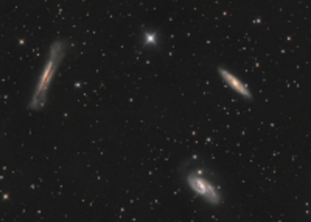
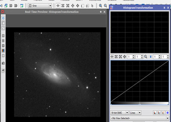

Que ce soit à l'oeil nu, avec une paires de jumelles, un instrument d'astronomie ou en photographie, il y a différentes façons d'apprécier les beautées de la voûte céleste.
Alors sans hésiter lancez-vous dans cette passionnante aventure qu'est l'observation du ciel nocturne!
Notre système solaire regorge d'objets à photographier!

CIEL PROFOND
TUTORIELS
EPHEMERIDES